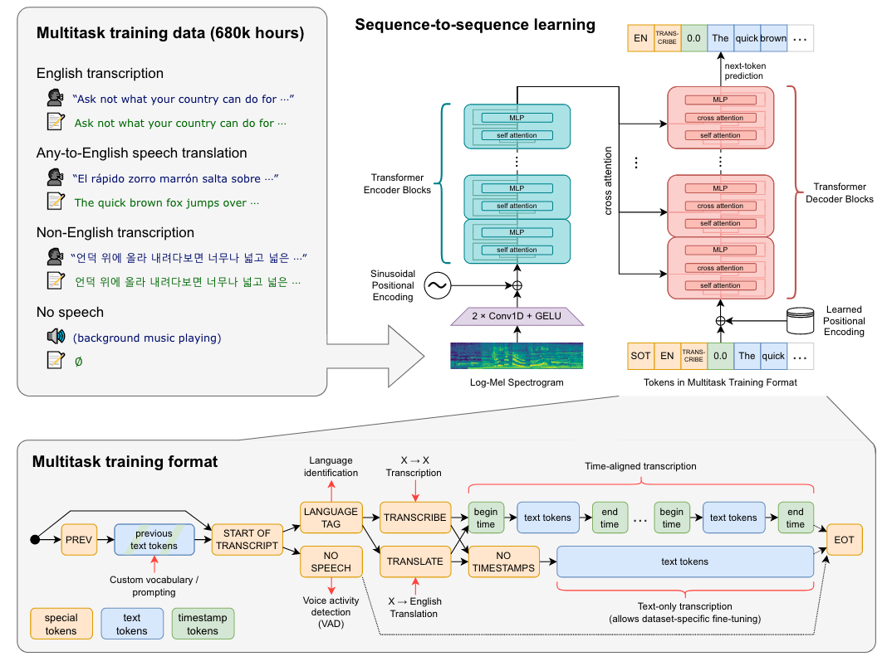

摘要
语音识别中有监督数据比较稀少，如何利用大规模的弱监督数据是比较有意义的研究方向；
数据处理
- 之前的一些研究没有足够重视弱监督训练，本研究表明，大量弱监督数据可以提升语音识别的鲁棒性；
- 扩充弱监督语音识别的数据集到68w小时，其中非英文数据11.7w小时；还包含12.5w小时的X→en语音翻译数据；
- 除了数据规模，还扩大了弱监督预训练的范围，使用多语言和多任务进行训练；
- 不需要文本预处理，不需要正则、反正则，大大简化了训练流程；
- 数据集是从互联网上得到，使用了几个过滤方法来提升转录质量：会去除互联网上ASR识别的数据；会进行语种识别，如果LID识别出的语种和CLD2不匹配，则把这个样本剔除掉（英语除外，如果文本是英语，会把非英语语音翻译成英语语音）；
- 将音频文件分成30秒的片段，并与那段时间内出现的文本子集配对。对所有音频进行训练，包括没有语音的片段(尽管具有子采样概率)，并将这些片段用作语音活动检测的训练数据。
- 为了避免测试集污染，会去除训练集与测试集之间的重复；
- 重新审视了错误率高的训练数据，发现了一些没有对齐、错误对齐的样本；
- 使用byte-level BPE text tokenizer;
模型
- 多任务学习的标签也是一个token，包含声音活动检测、语种识别等，如<|startoftranscript|>、<|nospeech|>、<|transcribe|>、<|translate|>、<|notimestamps|>、<|endoftranscript|>
- 如果在时间戳模式下最终得到start time token则表明一句话没有结束（超过了30s）则接下来的预测应该加上30s
测试
- 由于模型直接预测raw text，所以标点符号、格式等会影响最终的WER，所以作者进行了text standardization；